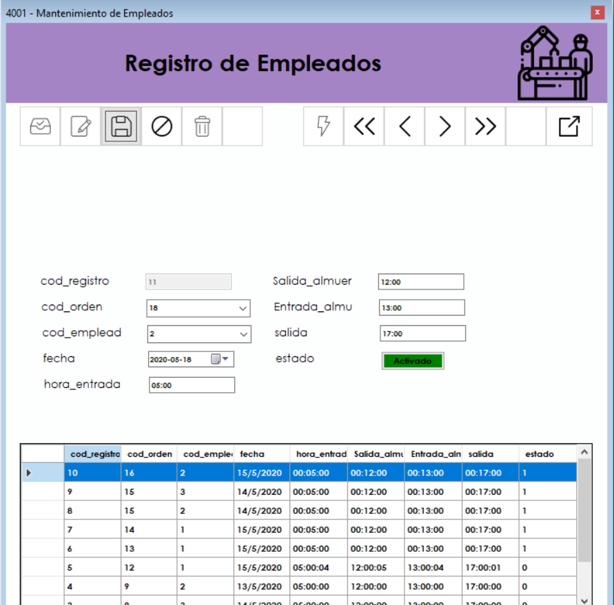
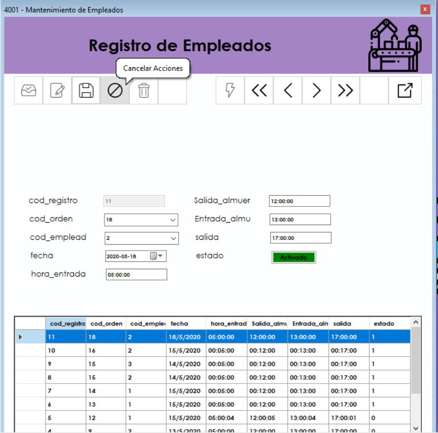

Pantalla De Inicio
Para acceder al registro de empleados debemos ir al menu superior y en la pestaña " MANTENIMIENTOS " se encontrará encontrará como acceder al formulario de registros de empleados bajo el codigo 4001
Registrar de Empleados
Se nos muestra el formulario principal en donde ingresaremos los registros de empleados como, id, codigo de orden en el que trabajará y horarios de entrada y salida
Nuevo Registro
Para ingresar un nuevo registro debemos dar click en el boton de nuevo ingreso que se ve en la imagen, posteriormente llenaremos los campos correspondientes y daremos en el boton del casete "Guardar"

Modificar Registro
Para modificar un registro primero debemos ser usuarios administradores, un usuario normal no puede acceder a estas operaciones. unicamente seleccionamos el registro a modificar y damos en el boton de "cambiar registro" y podremos acceder a los datos correspondientes. si se confunde o no quiere almacenar los cambios, dar en el boton de "Cancelar Cambios"

Eliminar Registro
si desea eliminar algun registro por alguna razon, puede darle a este boton, cabe agregar que el registro no es borrado como tal, unicamente es cambiado su estado
Actualizar Tabla
Si la en la tabla aun no aparece el registro que usted eliminó, insertó o modificó, puede refrescar la tabla por medio de este boton
Navegar entre Registros
Las flechas indican si quiere navegar al primero o ultimo registro o bien entre registros, uno por uno.
Errores
Si no se ha registrado ninguna Orden Pendiente, no se puede registrar el trabajo de un usuario, por lo tanto, deben haber ordenes creadas para poder registrar a un empleado.